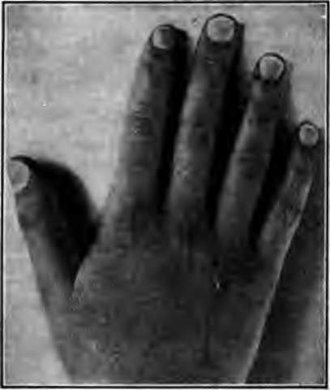
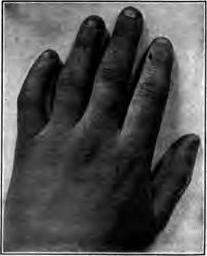
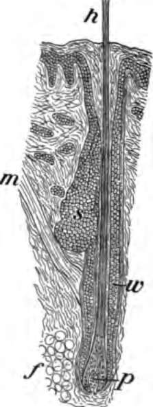

Cleanliness And Warmth. Part 2
Description
This section is from the book "The Human Body And Health", by Alvin Davison. Also available from Amazon: The Human Body and Health.
Cleanliness And Warmth. Part 2
The sweat glands are scattered throughout the skin of the entire body. Hard work on a very warm day may make them give out three quarts of sweat, but the average amount of sweat brought forth daily is only one pint. The sweat often called perspiration contains a little waste matter but its chief use is to cool the body.
Keeping The Skin Clean
Many people wash their hands and face several times daily, because they are soiled by dust and dirt easily seen. Much of the waste matter thrown out by the glands over the entire surface of the skin cannot be seen, but unless it is washed off at least once or twice a week, the person is likely to have an unpleasant odor. As some parts of the body, such as the feet, have much excretion given out by the glands, they should be washed daily.
The hands should always be thoroughly washed by using soap and hot water, just before eating or handling food to avoid germs of disease. The habit of cleanliness is one of the many good habits which everyone should form while young. If the hands become chafed or rough, a little glycerine or cold cream rubbed on them once or twice daily after washing will be helpful.
Bathing
Bathing is useful not only for the sake of cleanliness, but for making the body strong and healthy. A cold bath taken as soon as one is out of bed in the morning is very helpful to most people, in preventing colds and increasing the appetite. It wakes up the nervous system, makes the heart work faster, and the lungs take in fuller breaths. The room should be warm and the water should have a temperature of sixty or seventy degrees. The cold plunge or shower bath should not last longer than one minute.
If no tub or shower is convenient for use, two or three minutes may be spent in applying cold water to the body with a sponge or towel while standing in a pan or bowl to receive the drippings. As soon as the cold bath is finished, the body should be well rubbed with a coarse towel.
Fig. 81. Hand with nails properly cared for.
The Complexion
The color of the skin may vary much, but in health it should be smooth and soft. If pimples and blackheads occur, it is because some organs of the body are not doing their work properly. A breaking out on the skin of babies and also older persons is often due to improper care of the digestive organs. The condition may sometimes be helped by eating less meat and sweets, by chewing the food more thoroughly, and by taking plenty of exercise and fresh air.
The Hot Bath
Babies, invalids and some others who cannot use a cold bath, may have a hot bath. This is also stimulating but does not prevent colds. One should not go into the cold out door air, in less than an hour after a hot bath, as a cold may result. It is generally best, therefore, to take the hot bath at bed time.
Fig. 82. Hand of boy who chewed off the ends of his nails causing stubby fingers.
The Nails
The nails are made from a hardened part of the epidermis. When properly cared for they add much to the usefulness and appearance of the hand. Biting the ends of the nails off makes blunt and unshapely fingers. The ends of the nails should be filed off daily or cut weekly. The dirt should be removed from beneath them each time after washing the hands, and not when it is in a dry state.
The Hair
The base of each hair is held in a little sac formed by the dipping down of the epidermis. At its bottom is a tiny knob from which a new hair grows when the old one is pulled out or drops away. By the side of the hair sac are one or two oil glands, giving out an oily fluid into the sac near its top. This keeps the hair soft. No other hair oil should ever be used.
To avoid dandruff, the scalp should be thoroughly washed with soap and warm water once or twice a month. The hair should be dried before going out of doors in the cold. The hair should be combed daily, or whenever it becomes untidy, and little or no water used on it.
Fig. 83. A section through the root of a hair, s, oil gland; w, hair sac; p, knob from which the hair grows.
Gray Hair And Baldness
After middle life the coloring matter often leaves the hair, and it then becomes gray, because the hollow center is filled with air. There is no way of preventing this. Hair dyes should not be used. Some of them contain poison.
Baldness often occurs after the age of forty. None of the much advertised preparations will prevent baldness. Daily massaging or pinching and rolling of the scalp between the fingers for a few minutes will keep the glands and blood vessels active, and thus prevent baldness in some cases.
Bruises And Cuts
A bruise is a swelled and bluish-colored spot on the skin caused by a blow from something not sharp. The swelling is due to the lymph or watery part of the blood which has oozed through the walls of the hurt blood tubes. The best remedy is to apply a cloth wrung out of very hot or very cold water. It should be changed every three or four minutes for a half hour or more.
A cut is a break in the skin. Even a slight cut, especially if the flesh is torn, may result in a serious sickness, such as lockjaw or blood poisoning. A wound is made sore and white matter called pus produced by bacteria. Every cut or break in the skin should, therefore, be carefully washed with water and cloths which have been boiled to kill the germs. Some germ killer, such as turpentine, alcohol or weak carbolic acid, may then be poured into the cut, after which it should be protected by several thick-nessess of a clean cloth.
Continue to: